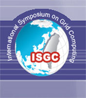

My first conference in 1 months time, ISGC in Taipei!

Just bought tickets to go to the International Symposium on Grid Computing (ISGC) 2013 for March! Also my first conference! The topics I will be discussing are Dr Alex Voss and my experiences in developing a Twitter mining tool, specifically the No-SQL databases that we have benched marked, and which No-SQL solution we thought was best for our use cases.
Cant wait :)